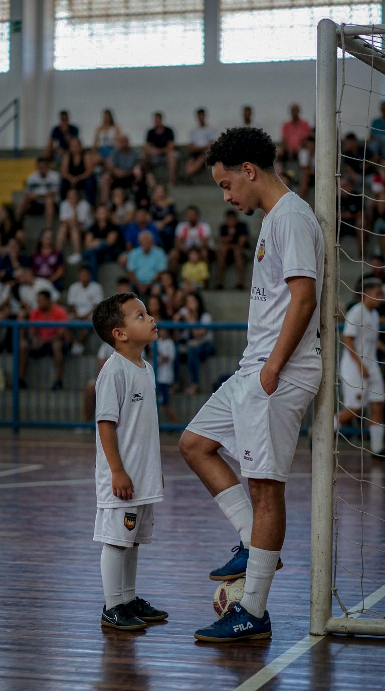

Um projeto sobre futebol, pessoas e tudo aquilo que nasce antes do minuto zero e continua depois do apito final.
Porque cada partida carrega sonhos, escolhas, aprendizados e histórias que vão muito além do campo.
O tema deste projeto surgiu com uma simples pergunta "O futebol é apenas dentro de campo? " muitas pessoas podem pensar que sim, que são partidas divididas por 2 tempos de 45 minutos totalizando 90, dentro disso sendo apenas chutar uma bola, fazer gols e vencer uma partida. Mas, vai além dos 90 minutos.

A constância de quem entende que cada treino também é parte do jogo.
Laços criados em quadra que atravessam temporadas e permanecem para a vida.
Aprender a continuar, mesmo quando o resultado não é o que esperávamos.
Transformar sonhos, experiências e escolhas em caminhos possíveis.